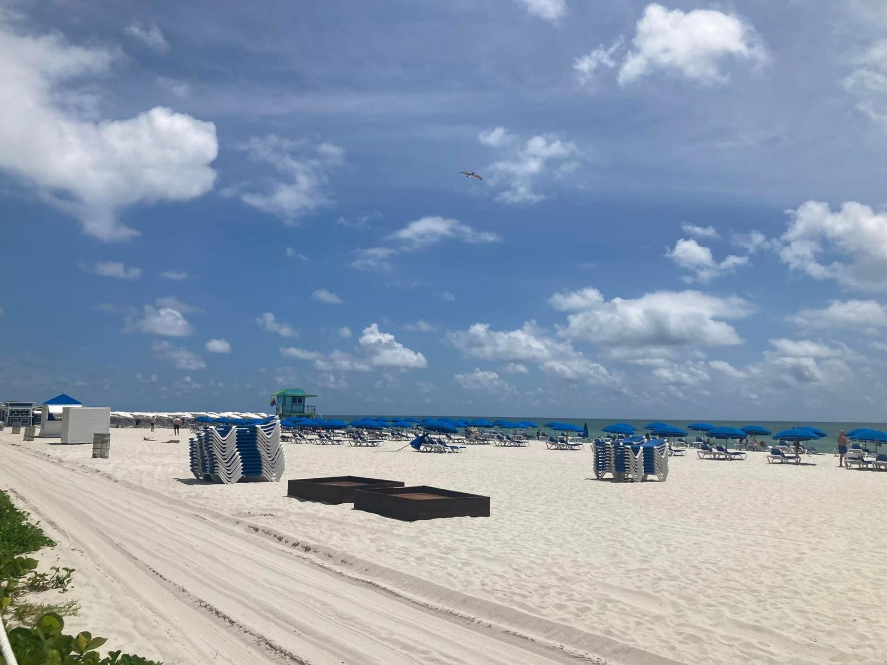
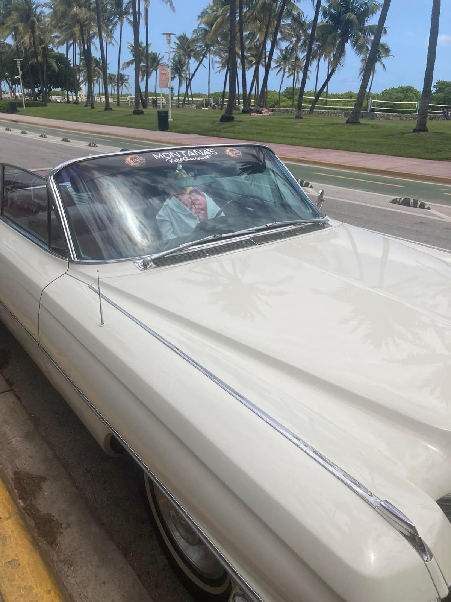
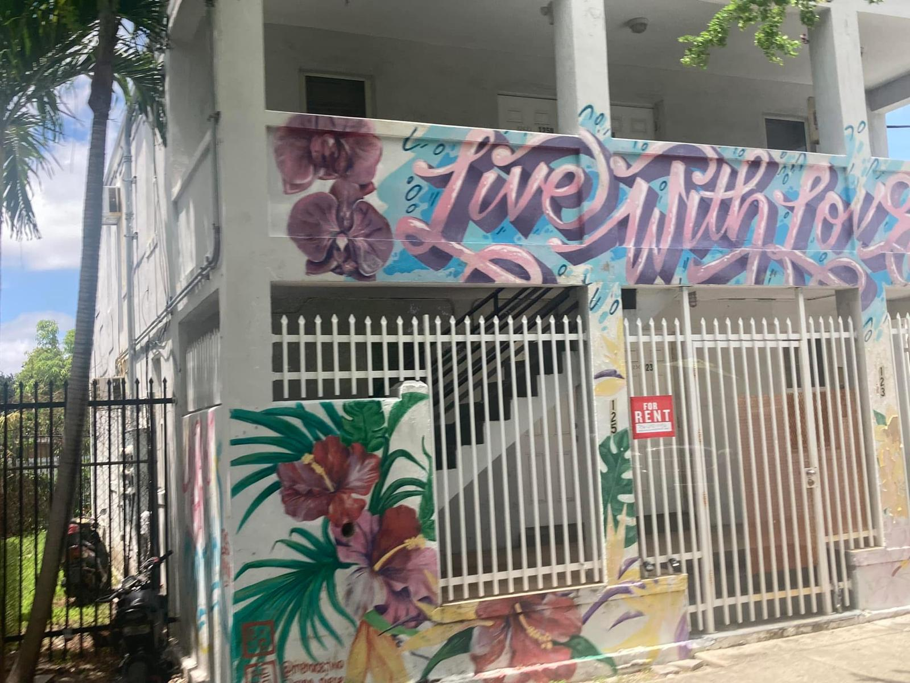
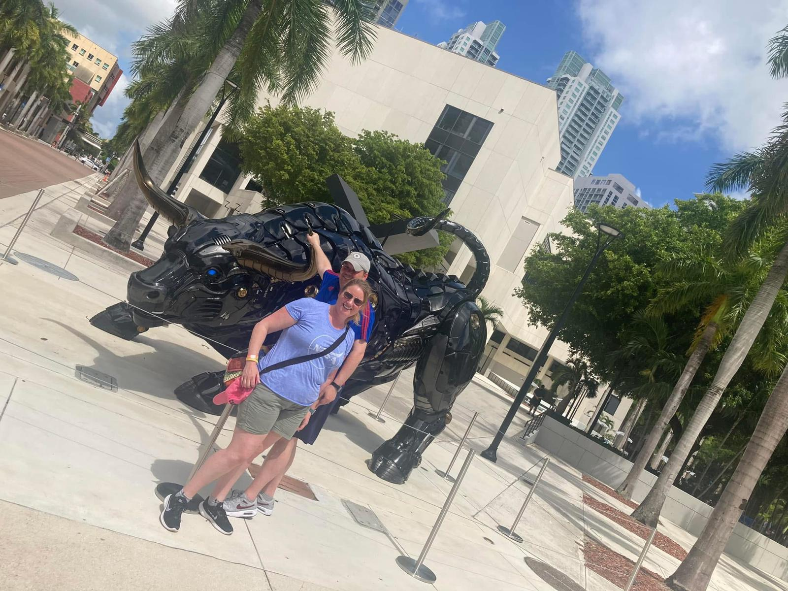
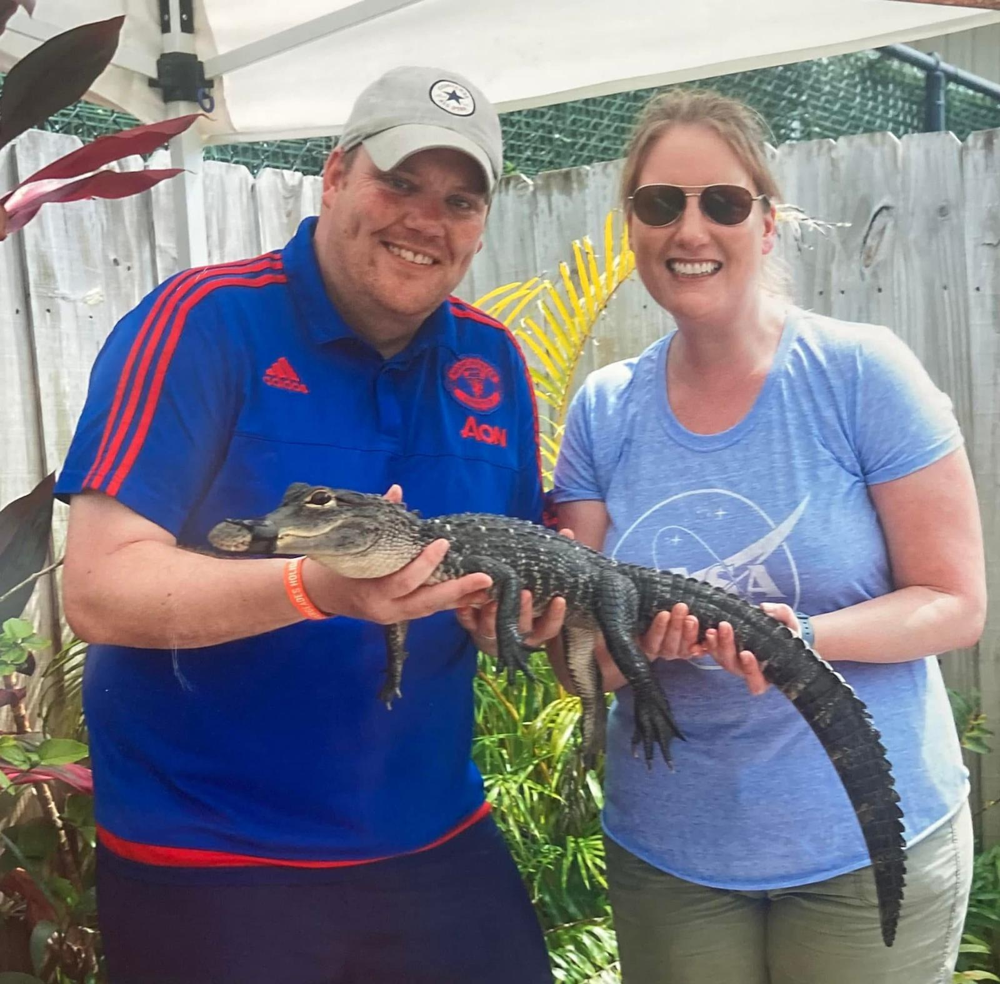
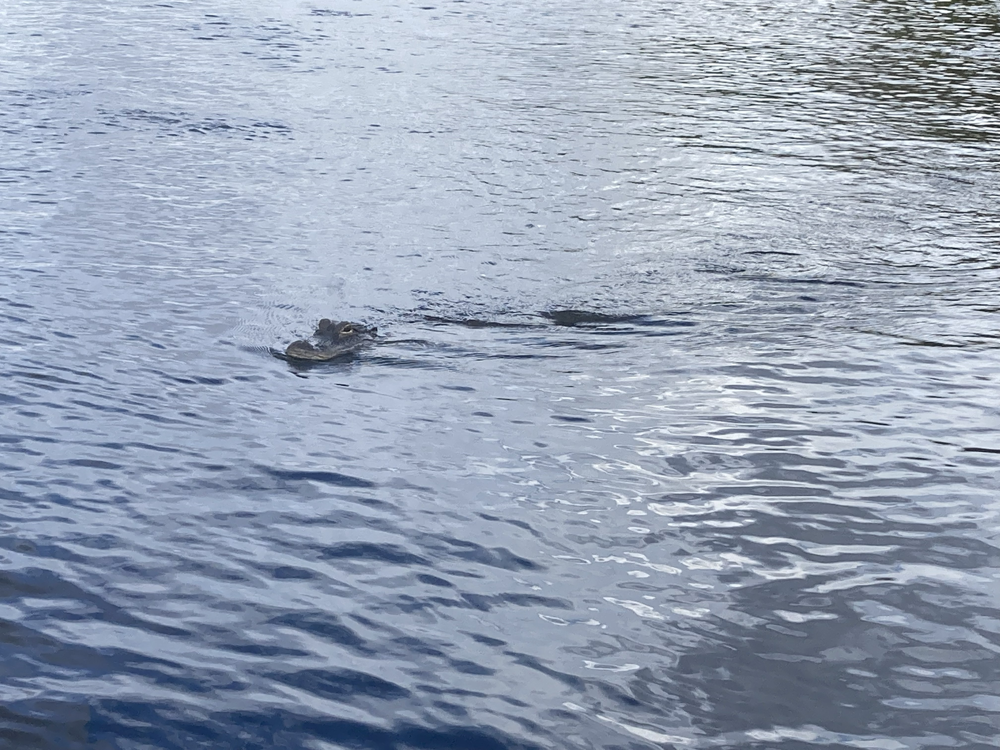

We spent two weeks driving over 4,000 kilometres from New York all the way down to Miami, passing through 14 states and experiencing some of the greatest cities, landscapes, music, food and history that America has to offer. Philadelphia, Washington DC, the Blue Ridge Mountains, Nashville, Memphis, New Orleans, Pensacola, Kennedy Space Center, the Everglades — this is our honest account of one of the most extraordinary trips we have ever done.
14 states visited:
We'd been planning this trip for a long time and it delivered beyond every expectation. Starting in the buzz of New York City and gradually working our way south through some of the most culturally rich, musically extraordinary and historically significant places in America — it genuinely felt like a different country every few days.
The food, the music, and the people were all wonderful. And as Irish travellers, the warmth we encountered everywhere was something else entirely — everyone we met had a story about their link to Ireland and the craic was ninety. By the time we reached Miami — mojito in hand, humidity rising — we were exhausted, sun-kissed and absolutely buzzing. Some trips change the way you see a country. This was one of them.
Arriving into the greatest city in the world — New York. Transfer to the hotel and a first evening exploring the city at leisure. The buzz hits you immediately.
Heading south via Philadelphia — the birthplace of the nation — with time to see Independence Hall and the famous Liberty Bell. Then on to Washington DC, one of the great capital cities of the world.
A full city tour taking in the US Capitol Building, the Supreme Court, the Library of Congress, the Lincoln Memorial and the White House. And then Arlington National Cemetery — the Kennedy family burial plot — one of the most moving places we have ever visited. A full day that stays with you.
Heading to Williamsburg — the colonial capital of Virginia — with a walk along the Duke of Gloucester Street past beautifully preserved colonial houses and the historic College of William and Mary. Then on to Roanoke for the night.
One of the great drives in America — along the Blue Ridge Parkway through the stunning Blue Ridge Mountains to Gatlinburg, the Heart of the Smokies. The scenery is breathtaking and the mountain roads are an experience in themselves.
Exploring the Great Smoky Mountains National Park — the Mountain Farm and Museum, black bears on the roadside, the extraordinary scenery. Then the brilliant Dolly Parton Stampede dinner show in Gatlinburg before heading on to Nashville. An absolutely brilliant day.
Nashville — the home of country music — delivered everything it promised. Live music everywhere, incredible food and an energy that is completely infectious. Then on to Memphis with a city tour including Beale Street and the optional visit to Graceland — the single greatest highlight of the entire trip.
Driving through Jackson and into Louisiana, arriving in the extraordinary city of New Orleans. An optional Mississippi Riverboat dinner cruise with a Dixieland jazz band made for an unforgettable first evening in the city.
A full day to explore the French Quarter — cobblestone streets, jazz on every corner, voodoo shops, incredible Cajun food and an atmosphere unlike anywhere else in America. New Orleans is utterly, magnificently one of a kind.
Driving along the Mississippi Gulf Coast to Pensacola — visiting the stunning Bellingrath gardens (one of the top ten rose gardens in the USA) and then Pensacola Beach on the Gulf of Mexico. White sand, warm water and the sea oats swaying in the breeze — a beautiful and unexpected highlight of the trip.
Driving along the Florida panhandle through Ocala — famous for its thoroughbred horse ranches — and on through central Florida to Orlando/Kissimmee. A long but beautiful drive through the heart of Florida.
A full day at leisure in Orlando — theme parks, pool time, or just taking a breath after ten incredible days on the road. The choice is entirely yours.
Visiting Kennedy Space Center — home of America's space program and one of the most jaw-dropping places we have ever been. The scale of the rockets and the history on display is genuinely awe-inspiring. Then on to Miami Beach for the final night.
The adventure ends in Miami — but not before a mojito. Or two. The best mojitos we have ever had anywhere in the world. We stand by that completely.
The birthplace of the nation — Independence Hall and the Liberty Bell. Standing where the Declaration of Independence was signed and debated is a genuinely powerful experience for anyone with even a passing interest in American history.
A deeply sobering and moving experience — walking past thousands of military graves to reach the Kennedy family burial plot. One of those visits that stays with you long after you've come home.
One of the great drives in America — the Blue Ridge Parkway winds through stunning mountain scenery that takes your breath away at every bend. The Smoky Mountains, black bears on the roadside and the Dolly Parton Stampede in Gatlinburg made this one of the best days of the whole trip.
The single standout moment of the whole trip. Seeing where Elvis lived, all his memorabilia, his cars, his outfits — and his final resting place in the garden. It moved us both far more than we expected. Absolutely fantastic.
Voodoo shops, jazz on Bourbon Street, incredible Cajun food, the Mississippi Riverboat dinner cruise and an atmosphere unlike anywhere else in America. New Orleans is utterly one of a kind and deserves every bit of its legendary reputation.
The unexpected highlight of the trip — the most beautiful white sand beaches on the Gulf of Mexico, warm turquoise water and the sea oats swaying in the breeze. Pensacola Beach is stunning and most people have never heard of it.
The home of America's space program is jaw-dropping for anyone who grew up watching space launches. The scale of the rockets and the history on display is genuinely awe-inspiring — a brilliant final stop before Miami.
An airboat through the sawgrass prairies — alligators, herons, turtles and a silence that hits you after weeks in busy cities. One of the most unique and extraordinary natural experiences we have ever had.
This is the exact tour we did from New York to Miami — and it was one of the greatest trips of our lives. Booking through TourRadar meant all the logistics were taken care of — accommodation, transport and the route through all 14 states. That freed us up to actually enjoy every single stop rather than spending our evenings planning the next day.
Disclosure: This is an affiliate link. If you book through it we may earn a small commission at no extra cost to you. This is the exact tour we did.
After weeks on the road, arriving in Miami felt like a reward. The heat hits you immediately — a wall of warm, humid air that tells you this is somewhere genuinely different to everywhere you've been on the way down. Miami is electric. South Beach, the Art Deco architecture, the boat-lined waterways, the food scene, the nightlife — it's a city that earns its reputation. We did the open-top bus tour to get our bearings, a boat cruise around Biscayne Bay and the celebrity mansions of Star Island, and then headed out to the Everglades.
And the mojitos. The best mojitos we have ever had anywhere in the world. We stand by that completely.




The moment you leave Miami's skyline behind and head into the vast wilderness of the Everglades National Park, you feel like you've entered a completely different world. The sawgrass prairies stretch to the horizon. The silence — broken only by birdsong and the distant roar of an airboat — is extraordinary after weeks in busy cities. The airboat ride is the centrepiece of any Everglades visit — skimming across the water at speed, spotting alligators in the grass, herons overhead, turtles on every log. We loved every second of it.
Our Everglades reel — watch this before you book!


This brilliant bundle covers all three Miami experiences in one booking — the Everglades airboat tour, a boat cruise around Biscayne Bay and the celebrity mansions, and the open-top bus tour of South Beach and the Art Deco district.
Disclosure: If you book through this link we may earn a small commission at no extra cost to you. This is the exact bundle we did in Miami.
Common questions
What to pack for the USA
From big cities to road trips and national parks — the USA means heat, long days and a lot of walking. These are the things we'd pack without hesitation.
Avoid roaming charges and stay connected for maps, Ubers and bookings across 14 states.
View on Amazon →Essential — especially in Florida and along the Gulf Coast. The sun is strong and you'll be outdoors constantly.
View on Amazon →You will walk enormous distances — cities, national parks, theme parks. Good shoes are non-negotiable.
View on Amazon →Long days out mean your phone battery won't last. Essential for maps, photos and tickets on the road.
View on Amazon →The USA uses different plugs to Ireland — a universal adaptor covers everything.
View on Amazon →Essential for the Everglades, Smoky Mountains and any time near water in the southern states.
View on Amazon →Disclosure: These are Amazon affiliate links. If you buy through them we may earn a small commission at no extra cost to you.
Book the exact tour we did through TourRadar — New York to Miami through 14 states, all logistics taken care of. Then add the Miami Everglades bundle from GetYourGuide and you're set.
Affiliate disclosure: if you book through our links we may earn a small commission at no cost to you. We only recommend experiences we've done ourselves.
The Deep South was part of a longer love affair with America. Here are our other USA guides.
Hollywood, Warner Bros., Santa Monica, Venice Beach and Griffith Observatory — 3 brilliant nights on the West Coast.
Read the LA guide →Big Island, Oahu, Maui & Kauai — volcanoes, shark cage diving and the Nā Pali Coast by helicopter.
Read the Hawaii guide →Dog sledding in Juneau, bear watching at Icy Strait Point and the Hubbard Glacier.
Read the Alaska guide →